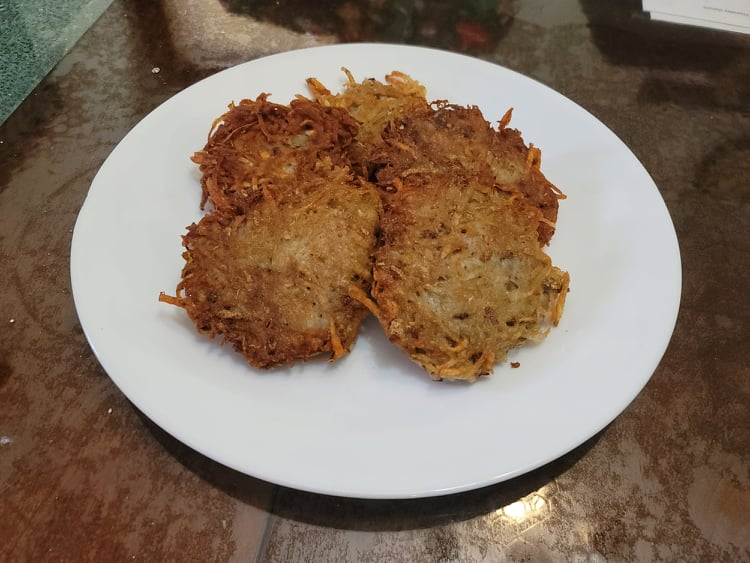

Latkes

Ingredients:
- 1 1/2 lb Russet potatoes
- 1/2 medium White onion
- 1 Egg
- 2 tbsp Matzo meal
- 1 tsp Kosher salt
- 1/8 tsp Black pepper
- Chicken schmaltz or substitute Canola oil for frying
Instructions:
- Scrub and clean the potatoes. Do not peel. Cut in half crosswise.
- Grate the potatoes and onion in a food processor. Place the grated potatoes and onion into a triple layered cheesecloth and squeeze out as much liquid as possible into a bowl.
- Let the potato water settle for a few minutes for the starch and water to separate. Then carefully pour out the water and leave the starch.
- Combine the potatoes and onions with all the other ingredients except the oil/schmaltz into the starch bowl. Toss to combine until homogenous. Let rest for 10 minutes.
- Heat 1/4 inch of the schmaltz/oil in a pan over medium heat. Scoop 1/4 cups of the latke mixture and form into patties. Place onto the pan and cook for 4-5 minutes on each side. Then remove and place onto a paper towel lined plate. Repeat until the latke mixture is finished.